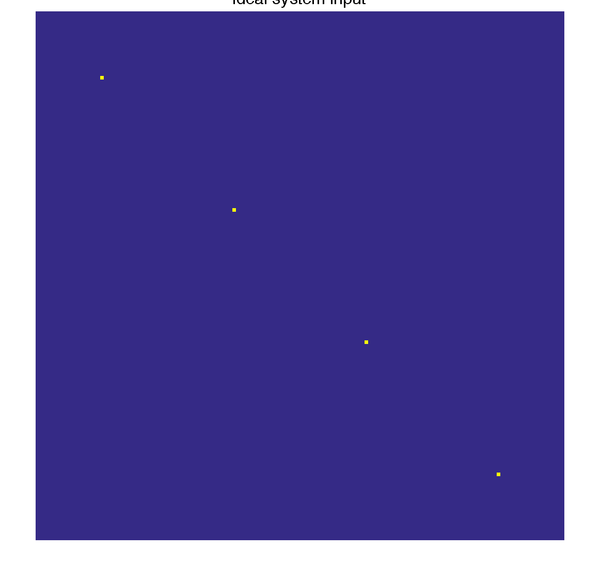

Contents
%%%%%% % This code demonstrates the T2 Shuffling transform point spread functions (PSF) % described in the MRM paper, % "T2 Shuffling: Sharp, Multi-Contrast, Volumetric Fast Spin-Echo Imaging" % % The code is provided to demonstrate the method. It is not optimized % for reconstruction time % % Jonathan Tamir <jtamir@eecs.berkeley.edu> % Jan 04, 2015 addpath src/utils basis = squeeze(readcfl('data/knee/bas')); T = size(basis, 1);
Size: 1 1 1 1 1 80 80
add imshow3 convenience function
imshow3 = @(im) montage(reshape(abs(im), size(im, 1), size(im,2), 1, []), [min(abs(im(:))), max(abs(im(:)))]);
general params
ny = 256; nz = 256; K = 4; patch_size = 7;
params for generating the mask
mask_options.dims = [ny, nz]; mask_options.accel = [1, 1]; mask_options.ETL = T; mask_options.e2s = 0; mask_options.cut_corners = false; mask_options.num_masks = 1; mask_options.VD = 1; mask_options.mask_cal_size = 32;
Simulate ideal system input
The ideal system input is a patch in each active temporal coefficient
mask = ones(ny, nz, T); TPSF_ideal = tpsf(mask, basis, K, patch_size); figure(1); imshow3(TPSF_ideal), colormap('default'); ftitle('Ideal system input', 32);
Simulate center-out ordering
The TPSF from center-out ordering shows blurring, and the coefficients are coupled
mask_options.shuffle = false; mask = gen_t2shuffling_mask(mask_options); TPSF_cent = tpsf(mask, basis, K, patch_size); figure(2); imshow3(TPSF_cent), colormap('default'); ftitle('Center-out TPSF', 32);

Simulate randomly shuffled ordering
The TPSF from randomly shuffled ordering shows a sharp peak, with incoherent artifacts that look like noise
mask_options.shuffle = true; mask = gen_t2shuffling_mask(mask_options); TPSF_rand = tpsf(mask, basis, K, patch_size); figure(3); imshow3(TPSF_rand), colormap('default'); ftitle('Randomly Shuffled TPSF', 32);